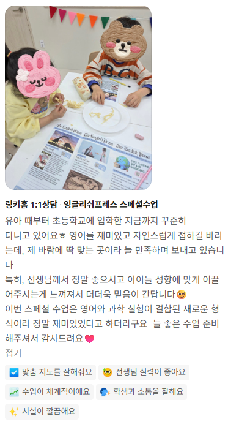
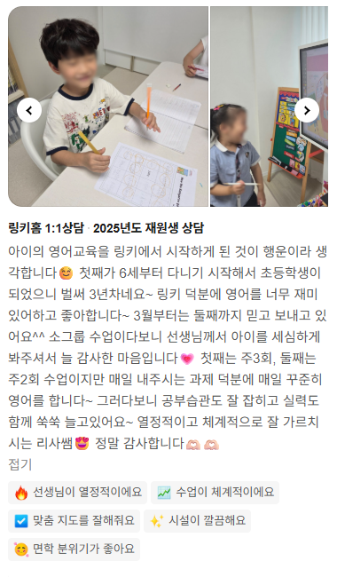
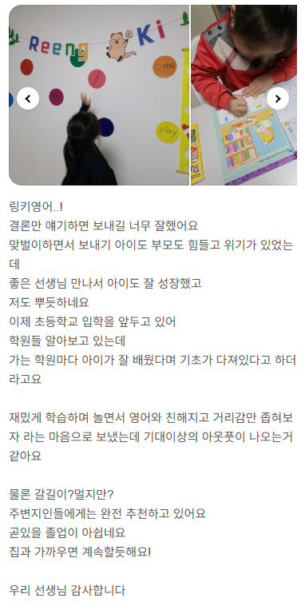

20년 경력의 원장이 직접 지도하는 유아·초등 전문 영어학원입니다. 단순히 영어성적을 위한 공부가 아닌, 영어라는 도구로 세상을 배우는 아이들로 성장할 수 있도록 지도하고 있습니다
Fun + Education = Funducation. 재미와 교육이 만나 아이가 스스로 다시 일어서는 힘을 키웁니다.
강제로 반복하지 않고, 노출·인지·재인지의 자연스러운 반복으로 영어를 언어로 체득합니다.
Story부터 Acquisition까지 5단계 몰입 구조로, 아이가 표현을 스스로 궁금해하고 즐겁게 말하게 합니다.
학습력(Capability)과 학습량(Capacity)을 분리해 쌓아가며, 흔들림 없는 실력을 완성합니다.
링키영어 Stage 과정부터 TEENZ ESL까지 끊김 없이 이어집니다. 자세한 내용은 프로그램·커리큘럼 페이지에서 확인하세요.
유아부터 초등까지 다양한 연령의 아이들을 만나오면서 제가 가장 중요하게 생각하는 건, 영어에 대한 첫 감정과 긍정적인 태도입니다.
영어는 언어이고, 영어로 하는 모든 경험들이 다채롭고 즐겁기를 바랍니다.
1년 전, 3달 전, 어제보다 더 성장한 자신의 모습을 확인하며 성취감과 영어 자신감을 느끼는 곳! 학생들은 매일 오고 싶고, 학부모님은 믿고 맡길 수 있는 영어교육 기관!
링키영어 인계매탄학원는 이러한 교육기관이 되고자 끊임없이 노력하고 있습니다.
직접 다니신 학부모님들이 카카오톡으로 남겨주신 후기입니다.



6~7세 유아 과정(링키영어 Stage1)부터 초등 고학년 TEENZ ESL 과정까지 이어지는 11년 커리큘럼을 운영하고 있어요.
경기도 수원시 영통구 권광로260번길 36, 매탄힐스테이트 제1상가 302호에 있으며, 인계동·매탄동 지역에서 많이 찾아주고 계세요.
평일 오후 1시 30분부터 6시 30분까지 운영해요. 자세한 반별 시간표는 상담 시 안내해 드려요.